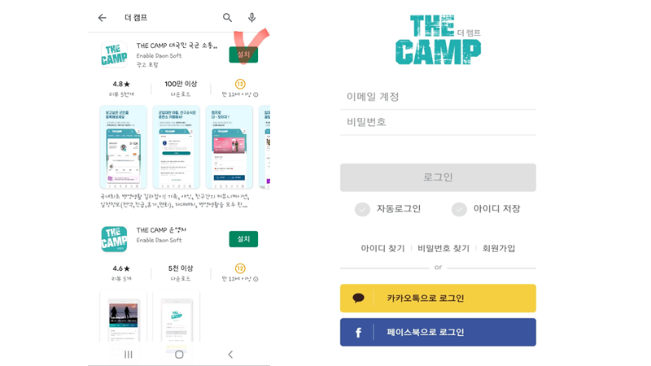
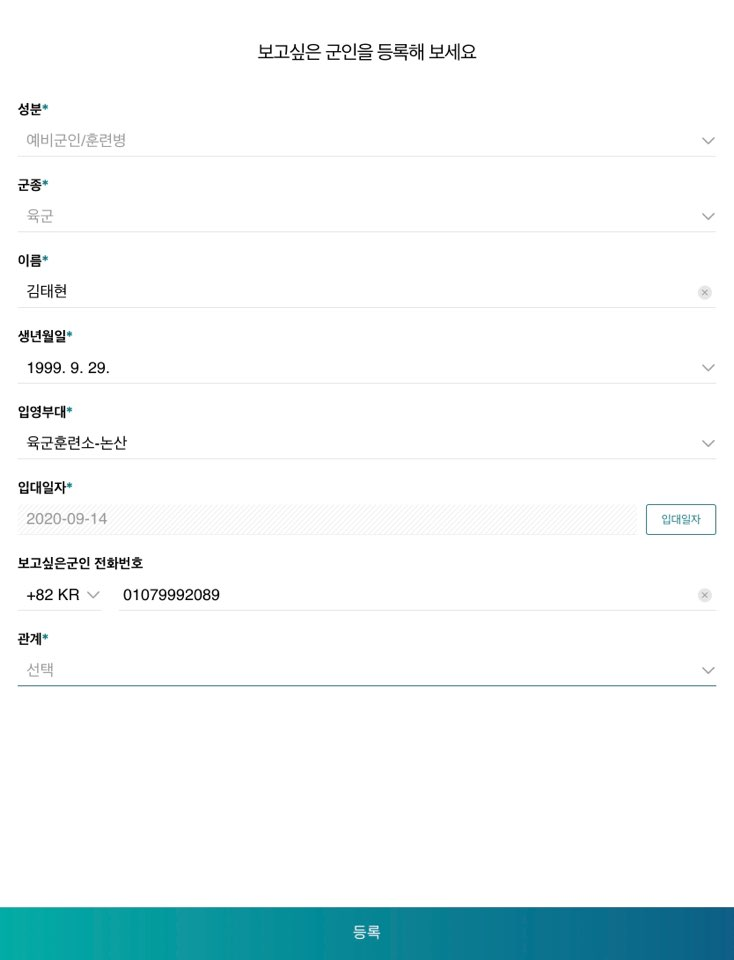

*유의사항*
- 훈련병 추가하기 및 편지쓰기는 연명부가 추가되는 입영 다음주 화요일~수요일(9월 22일~9월23일)부터 가능합니다.
- 답장을 받고 싶은 분께서는 꼭 편지에 답장을 받을 주소와 우편번호(5자리)를 적어주세요. 제가 손편지를 써서 보내드리겠습니다!
- 저에게 편지를 쓸 수 있는 기간은 논산 훈련소를 수료하는 5주동안 입니다! 10월 16일(일)까지 쓴 편지만 제가 볼 수 있으니 미리 써주시면 감사하겠습니다ㅜㅜ
이제부터 방법을 알려드리겠습니다.
1. 앱 접속 및 로그인
스마트폰의 어플리케이션 스토어에서 "더 캠프"를 검색한 후 설치해주세요. 그리고 회원가입 후 로그인해주세요.

2. 보고 싶은 군인 등록
메인 화면에서 보이는 보고싶은 군인 등록하기 버튼을 클릭하여 훈련병을 등록할 수 있습니다. 다음으로 저의 인적 사항을 입력해 주시면 됩니다. 저의 인적 사항은 아래와 같습니다. 인적 사항을 입력하신 후에 관계를 선택해주시고 저를 보고싶은 군인으로 등록해주세요!
*인적 사항
- 성분: 훈련병
- 군종: 육군
- 이름: 김태현
- 생년월일: 1999.09.29
- 입영일: 2020.09.14
- 입영부대: 육군훈련소

3. 카페 가입
최하단의 메뉴바에서 "카페"를 클릭해주세요. 그러면 추천카페에 제가 올라온 것을 확인할 수 있습니다. 카페확인을 눌러주시면 카페에 가입되고 아래쪽에 내 카페에 추가됩니다. (*9월 22일~9월 23일 이후에 카페가 개설되므로 그 전에는 가입할 수 없습니다.)
4. 위문 편지 쓰기
내 카페에 제가 정상적으로 추가되었다면, 위문 편지 버튼을 확인할 수 있습니다. 이 버튼을 클릭하여 위문 편지를 작성해주세요!
*편지에 꼭 들어가야 할 것들
- 작성 날짜
- 자신이 누구인지(안써주면 알 방법이 없대요ㅜ)
- 답장을 원하시는 분은 꼭 주소와 5자리 우편번호를 적어주세요! →[우편번호찾기(클릭)]